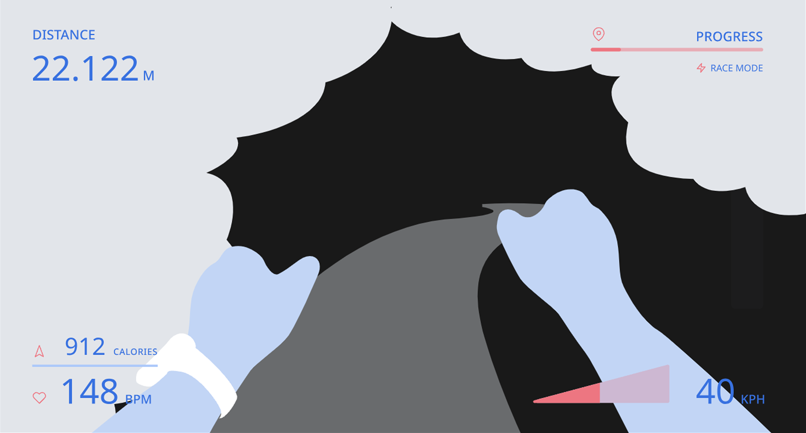
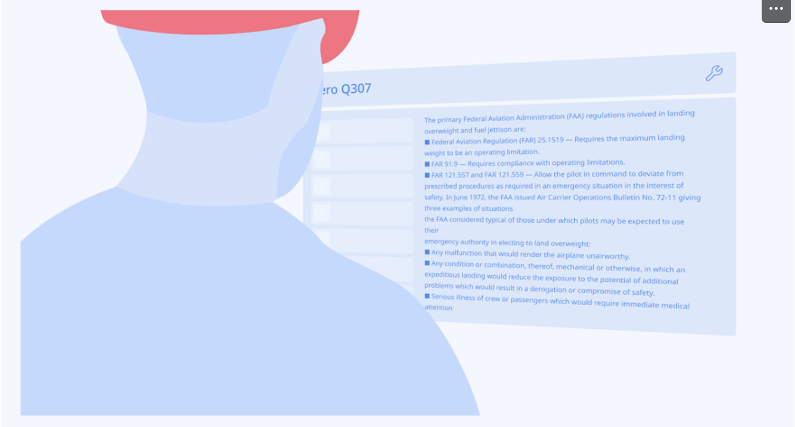
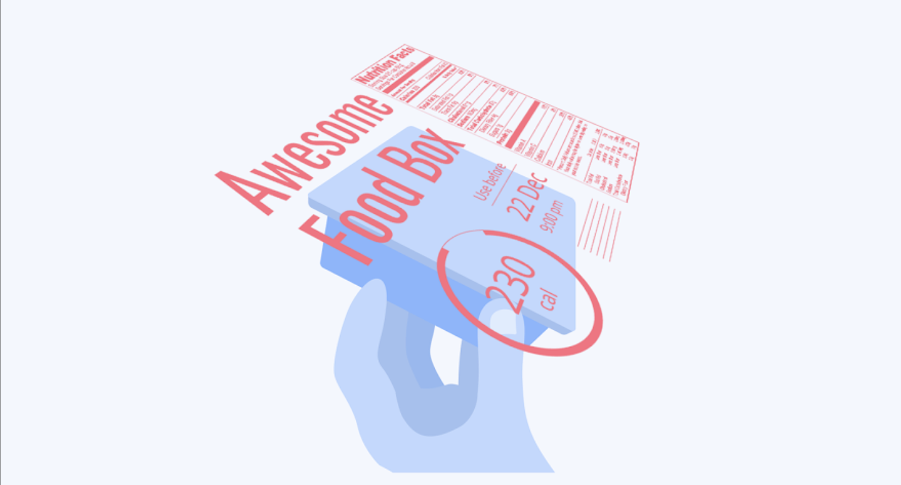
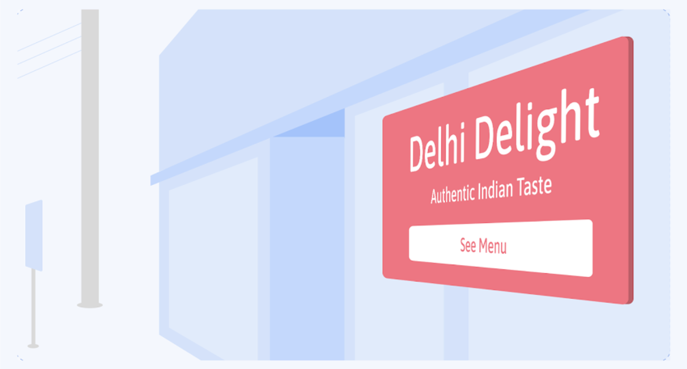
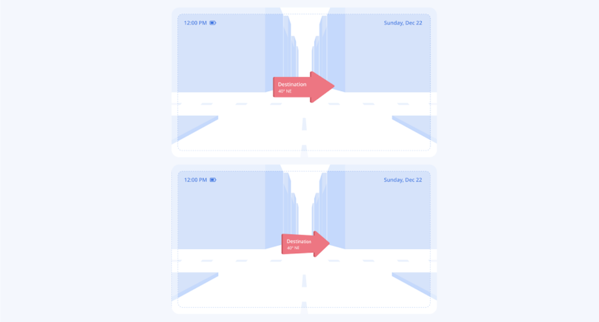
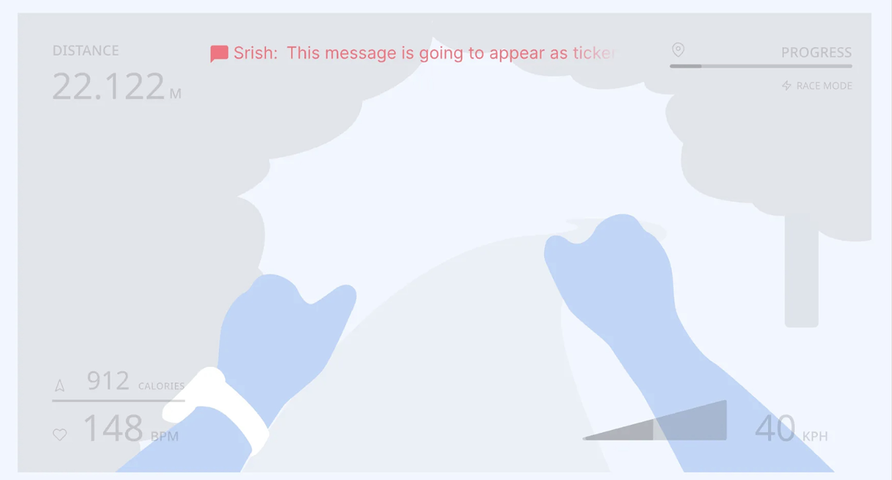
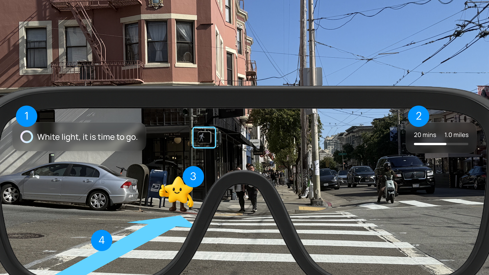

Project Type
Sponsored Academic
Timeline
Jan – Aug 2025
Team
2 Designers
Innovation Specialist
Lead Designer (Me)
Tools
Figma
FigJam
ChatGPT
What I did
- Led end-to-end design of an AR navigation system for child mobility.
- Drove research planning and synthesis with parents and children.
- Defined experience principles balancing independence and parental reassurance.
- Led prototyping and usability testing to validate safety and clarity.
- Coordinated with designers and UNICEF Innovation specialists on impact goals.
Overview
Exploring child-centered mobility design for a sustainable future
This milestone project was developed in collaboration between CCA and the UNICEF Innovation Node. We worked closely with Meg McLaughlin, Innovation Specialist at the Node, receiving feedback throughout the process to guide and refine our direction.
The UNICEF Innovation Node is a specialized hub within UNICEF that focuses on early-stage ideas and prototypes, partnering with designers and technologists to explore scalable solutions. Through this partnership, we investigated how human-centered design can create safer, more inclusive mobility systems for children over the next 3 to 10 years.
Impact
Validating a future-mobility concept with real families
Through research, prototyping, and collaboration with the UNICEF Innovation Node, the project demonstrated how AR navigation can foster safe and independent mobility for children.
Parents said the system made them more comfortable letting their child travel independently
Parents and children participated in usability tests, shaping the product's safety and interaction design
UNICEF partners, faculty, and peers engaged through live demos and case presentations, contributing insights to an upcoming UNICEF knowledge product
Problem
Unsafe conditions for children moving through the city alone
City environments can be unpredictable, and children navigating them on their own face real safety risks. Traffic, visibility challenges, and gaps in pedestrian infrastructure make independent movement unreliable and potentially dangerous. This raised the need to explore how to support safer mobility for children in urban spaces.
Global burden
Road traffic injuries are the leading cause of death for children ages 5 to 12, with nearly 220,000 lives lost every year, more than 600 each day. These incidents disproportionately affect children in low and middle income countries where road safety infrastructure is limited.
Preventable injuries
More than 1,600 children and adolescents die daily from preventable injuries, and traffic crashes remain the single largest contributor. Many of these incidents are linked to unsafe walking conditions, poor visibility, and limited protective infrastructure near schools and neighborhoods.
Parental concerns
In the United States, 1 in 5 parents have never allowed their teen to travel alone. Parents cite traffic danger, unfamiliar routes, and potential abductions, which highlights the tension between supporting independence and ensuring safety.
Solution
AR guidance for children, safety controls for parents
Nova combines AR glasses for children with a mobile companion app for parents. The system supports safe, independent mobility while keeping families connected.
For children
The AR glasses provide simple HUD text, responsive navigation guidelines, and a friendly mascot that guides them safely while encouraging awareness.
For parents
The companion app lets parents set up child profiles, safe zones, and emergency contacts. It sends real-time alerts if a boundary is crossed, providing reassurance without constant surveillance.
Research
Grounding the design in real experiences
To design a child-centered navigation system, we immersed ourselves in expert discussions and everyday family experiences. We joined events at UC Berkeley focused on transit equity and future mobility, and we met families at the San Francisco Summer Resource Fair. Alongside these engagements, we conducted parent interviews and co-creation workshops with children and caregivers.


The independence tension
Parents seek reassurance while children strive for independence, creating an ongoing tension in mobility decisions.
System change is slow
System-level changes such as policy or infrastructure upgrades are slow and uncertain, so families often look for practical solutions they can use right away.
AR is becoming everyday
Rapid advances in technology are opening possibilities for tools that balance safety, independence, and engagement in new ways.
Evaluating potential solutions
Building on these insights, we compared potential approaches such as GPS trackers, mobile apps, transit training, and community escorts. While each offered partial solutions, none fully balanced safety with independence. This led us to focus on Navigation AR Glasses. Although not yet fully feasible for production, advances in AR, language models, and hardware are reducing costs and expanding accessibility. AR glasses represent a forward-looking vision for how technology could better unite safety and independence while opening new opportunities for child mobility.
| Solution | Real-Time Guidance | Builds Independence | Engages Children | Reassures Parents | Futuristic Potential | Feasibility |
|---|---|---|---|---|---|---|
| GPS Tracker Watch | No | Minimal | Low | Strong | Low | High |
| Companion Mobile App | Limited | Some | Moderate | Moderate | Moderate | High |
| Public Transit Training Program | None | Strong | Moderate | Moderate | Low | Limited |
| Community Escort Program | Yes | None | Moderate | Strong | Low | Low |
| Navigation AR Glasses | Yes | Strong | High | Strong | High | Moderate |
Competitive analysis across Meta, Snap, and Apple
Once we aligned on AR glasses as a promising direction, we conducted a competitive analysis of Meta, Snap, and Apple to better understand the hardware landscape, interaction methods, and long-term trends. This helped us define a focused product roadmap grounded in current feasibility and future opportunity.


The next computing platform
AR glasses are emerging as the next computing platform. Growing industry investment and early consumer interest show strong momentum for integrating advanced technologies through lightweight wearables.
Interactions still maturing
Voice and hand gesture input are currently the primary interaction methods. Portable AR glasses with reliable display overlays are still limited and may take two to three years to reach mainstream use.
Software, not hardware
UNICEF does not need to build AR glasses. A flexible, device-agnostic software layer keeps the solution relevant as the hardware ecosystem evolves.
Ideation
Design opportunity
How might we create AR glasses that help children navigate public spaces safely, build independence with confidence, reassure parents when needed, and stay simple enough for everyday use?
Design Goals
Four success metrics shaped every decision
To guide the development of the navigation AR glasses, we defined metrics that balance children's independence with parental reassurance. These focus on confidence, safety, and exploration while keeping both groups at ease.
Child Navigation Confidence
Children feel more capable and secure when navigating public spaces independently.
Parental Reassurance
Parents gain peace of mind knowing their child is supported and monitored within safe boundaries.
Safety Incident Reduction
Children face fewer risks as they receive clear guidance and stay aware of potential hazards.
Independence Encouragement
Children develop autonomy by exploring safely without constant parental oversight.
Design Challenge 1
Presenting information clearly without overwhelming the user
I explored different AR text display styles to understand how much information children can process while staying aware of their surroundings. Based on this study, I chose HUD text as the primary approach. It keeps distance, time, and alerts in fixed positions, which makes them stable, easy to read, and always visible without blocking the main view.
HUD Text

Text for Long Reading

Sticky Info Text

Signage Text

Responsive Text

Ticker Text

- 1HUD Text (Left): Clear alert in a stable position.
- 2HUD Text (Right): Estimated time and distance stay fixed, always visible.
- 3Mascot (Nova): Child-friendly companion for guidance.
- 4Navigation Path: Responsive guide that adapts to movement.

"I want my child to get directions, but not so much text that they lose focus on the road." — Parent, usability test
Design Challenge 2
Balancing safety with independence
We first designed the child experience with simple navigation cues and hazard alerts, but testing showed parents still felt uneasy. Some asked for full real-time tracking, yet children said they would not wear the glasses if every step was visible. Real-time tracking is now an optional setting parents can turn on or off, while safe-zone alerts remain the default. We created a paired system where children get calm guidance through the glasses and parents manage safe zones with alerts only when boundaries are crossed. This protects independence and still gives parents reassurance.


"I want my child to feel trusted, but I still need to know if they go somewhere unsafe." — Parent, usability test
Usability Testing
Iterative feedback to refine the experience
Over a one-month prototype sprint, we tested with 20 parents, sometimes together with their children. Their feedback on navigation clarity, safety settings, and overall usability shaped key refinements to both the AR glasses and the companion app. These insights helped us create a system that feels more practical, child-friendly, and reassuring for parents.
Parents said the system made them feel more comfortable letting their child travel independently
Parents tested the prototype, often with their child present in the session
Major iterations: simplifying AR dialogue, and rebuilding safety setup with clearer visual depth
Final Design
Companion app onboarding
Through the companion app, parents connect the AR glasses, set up a child profile, add emergency contacts, and define safe zones like home or school. Once setup is complete, they can monitor their child's location in real time and receive alerts if the child leaves a safe area. This supports independent navigation while keeping parents reassured.
Navigation mode
Navigation mode guides kids step by step to school using clear voice prompts and simple visual cues in their field of view. Children choose a destination with a short command, then follow safe turn-by-turn directions supported by contextual alerts such as construction zones or traffic lights. Friendly characters, progress updates, and small celebrations help make the journey encouraging and easy to follow.
Freedom mode
Freedom mode gives kids more independence while still keeping them safe. As they explore, the glasses provide gentle reminders, warn when they leave a safe area, discourage unsafe interactions, and guide them to nearby safe places when needed. Through simple navigation and positive reinforcement, children build confidence moving on their own while parents stay reassured.
Reflection
What I learned
This project showed how real-world insights can shape speculative design. Talking with parents and children helped us understand the balance between independence, safety, and reassurance, while prototyping revealed how AR can support awareness and confidence for young travelers.
Working with the UNICEF Innovation Node reinforced that child mobility is a global equity issue. Voice-based interaction proved intuitive for children, and future directions may explore simple hand gestures as hardware improves. With continued advances in AR and AI, NOVA has the potential to grow into a practical mobility tool that helps children move more confidently in their daily lives.